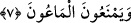

7. Hayra da mâni olurlar.
“Mâûn” kelimesi, “ma‘n” kökündendir. Ma‘n az şey demektir. Zekât da “mâûn” diye
isimlendirilir. Çünkü malın kırkta biri zekât olarak verilmektedir. Bu ise çoktan verilen
az bir malı ifâde eder.
Ebu’l-Leys, mâûn kelimesinin Habeş lisânında “mal” anlamına geldiğini söyler.
Burhânü’l-Kur’ân’da şöyle deniyor: Bu sûrede “ellezîne hum” denildikten sonra bir
kez daha aynı ifâdenin tekrar edilmesi, fiilin isme atfedilmesinin mümkün olmamasından
dolayıdır. Daha sonra ise “Ellezîne hum yemneûn” denmemiştir, çünkü bu kelime zâten
fiildir. Bu fiilin önceki fiile atfedilmesi gâyet güzel olmuştur. Bu da güzel bir nüktedir.
Âyet, “onlar zekâtı vermezler” demektir. Mâûn kelimesinin “salât/namaz” kelimesinin
akabinde zikredilmesi de buna delâlet etmektedir. Veya âdet olarak ödünç alınıp verilen
şeyleri birbirlerine vermezler, demektir.
Cezâsına inanmamaktan kaynaklandığı için yetîm ve fakîre önem vermemek kınanma
ve azarlanmayı gerektirirse, dînin direği namaza ve küfrün bir şûbesi olan riyâya
ihtimâm göstermemek, İslâm’ın köprüsü zekâtı vermemek ve insanlara kötü davranmak
buna daha fazla müstahaktır. Müslüman adını taşıyan hattâ âlim olan ama bu sıfatları
üzerinde taşıyan nice insanları görüyorsun! Aman Allah’ım, bu ne büyük bir musîbet!
“Âdet olarak ödünç alınıp verilen şey”den maksad, insanların âriyet/ödünç olarak
birbirlerinden alıp verdikleri ve birbirlerine yardım ettikleri şeylerdir. Balta, kazan,
tencere, kova, iğne, çanak, elek, keser, çakmak, ateş, su ve tuz gibi. Komşunun senin
fırınında ekmek pişirmek istemesi veya bir malını birgün ya da yarım gün senin yanında
bırakması da bu kabîldendir.
Hz. Âişe (r.anhâ)’dan rivâyet olunuyor: “Hz. (r.anhâ) Âişe bir gün Nebiyy-i Ekrem
(s.a.) Efendimiz’e:
“–Ey Allah’ın Rasûlü! Verilmemesi harâm kılınan şey nedir?” diye sordu. Efendimiz
(s.a.):
“–Su, ateş, tuzdur” buyurdu. Hz. Âişe (r.anhâ) tekrar:
“–Ya Rasûlallah! Suyu, anladık. Peki ateş ve tuzu vermemek niçin yasaklandı?” diye
sordu.
Nebiyyullah (s.a.):
“–Ey Humeyra! Kim komşusuna ateş verirse sanki, bu ateşle pişen yemeği sadaka
olarak vermiş gibi olur. Kim tuz verirse, sanki onunla tatlandırılmış yemeğin tümünü
sadaka olarak vermiş gibi olur. Kim suyun olmadığı bir yerde başkasına bir yudum su
verirse bir nefsi diriltmiş gibi olur.” [236] Nitekim Keşfu’l-esrâr’da böyle zikredilir.
Bir kişi zarûret sebebiyle yukarıda zikredilen şeylerden birini isterse, onu vermemek
şer‘an mahzurludur, ama zarûret hâli dışında istediyse, o zaman onu vermemek